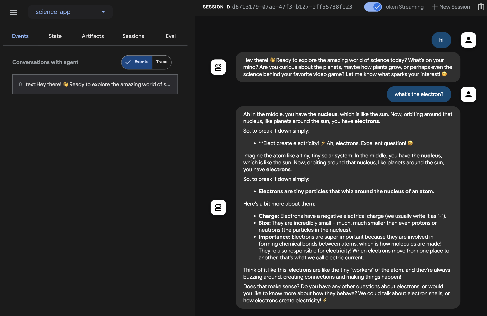

クイックスタート (ストリーミング / Java)¶
このクイックスタートガイドでは、基本的なエージェントを作成し、JavaでADKストリーミングを活用して、低遅延で双方向の音声対話を実現するプロセスを順を追って説明します。
まず、JavaとMavenの環境をセットアップし、プロジェクトを構成し、必要な依存関係を定義します。次に、簡単なScienceTeacherAgentを作成し、開発UIを使用してそのテキストベースのストリーミング機能をテストします。その後、ライブ音声通信を有効にし、エージェントを対話型の音声駆動アプリケーションに進化させます。
初めてのエージェントを作成する¶
前提条件¶
-
この入門ガイドでは、Javaでプログラミングします。お使いのマシンにJavaがインストールされていることを確認してください。理想的には、Java 17以上を使用している必要があります（java -versionと入力して確認できます）。
-
また、JavaのビルドツールであるMavenも使用します。先に進む前に、お使いのマシンにMavenがインストールされていることを確認してください（Cloud TopやCloud Shellの場合はインストール済みですが、ご自身のラップトップでは必ずしもそうではありません）。
プロジェクト構造の準備¶
ADK Javaを始めるために、以下のディレクトリ構造を持つMavenプロジェクトを作成しましょう：
インストールページの指示に従い、ADKパッケージを使用するためのpom.xmlを追加してください。
Note
プロジェクトのルートディレクトリには、adk-agentsの代わりに好きな名前を自由に使用してください。
コンパイルの実行¶
Mavenがこのビルドに問題がないか、コンパイルを実行して確認してみましょう（mvn compileコマンド）：
$ mvn compile
[INFO] Scanning for projects...
[INFO]
[INFO] --------------------< adk-agents:adk-agents >--------------------
[INFO] Building adk-agents 1.0-SNAPSHOT
[INFO] from pom.xml
[INFO] --------------------------------[ jar ]---------------------------------
[INFO]
[INFO] --- resources:3.3.1:resources (default-resources) @ adk-demo ---
[INFO] skip non existing resourceDirectory /home/user/adk-demo/src/main/resources
[INFO]
[INFO] --- compiler:3.13.0:compile (default-compile) @ adk-demo ---
[INFO] Nothing to compile - all classes are up to date.
[INFO] ------------------------------------------------------------------------
[INFO] BUILD SUCCESS
[INFO] ------------------------------------------------------------------------
[INFO] Total time: 1.347 s
[INFO] Finished at: 2025-05-06T15:38:08Z
[INFO] ------------------------------------------------------------------------
プロジェクトは正しくコンパイル用にセットアップされているようです！
エージェントの作成¶
src/main/java/agents/ディレクトリ配下に、以下の内容でScienceTeacherAgent.javaファイルを作成します：
package samples.liveaudio;
import com.google.adk.agents.BaseAgent;
import com.google.adk.agents.LlmAgent;
/** 科学の先生エージェント */
public class ScienceTeacherAgent {
// Dev UIがエージェントを動的に読み込むために期待するフィールド
// (エージェントは宣言時に初期化されている必要がある)
public static BaseAgent ROOT_AGENT = initAgent();
public static BaseAgent initAgent() {
return LlmAgent.builder()
.name("science-app")
.description("科学の先生エージェント")
.model("gemini-2.0-flash-exp")
.instruction("""
あなたは、子供やティーンエイジャーに科学の概念を
説明する親切な科学の先生です。
""")
.build();
}
}
トラブルシューティング
モデルgemini-2.0-flash-expは将来非推奨になります。使用に問題がある場合は、代わりにgemini-2.0-flash-live-001を使用してみてください。
後ほど、このエージェントを実行するためにDev UIを使用します。ツールがエージェントを自動的に認識するためには、そのJavaクラスは以下の2つのルールに従う必要があります：
- エージェントは、BaseAgent型のpublic staticなグローバル変数ROOT_AGENTに格納され、宣言時に初期化されている必要があります。
- エージェントの定義は、動的コンパイルクラスローダーによってクラス初期化時にロードできるよう、staticメソッドである必要があります。
Dev UIでエージェントを実行する¶
Dev UIは、エージェント用の独自のUIアプリケーションを構築することなく、開発目的でエージェントを迅速に実行・テストできるWebサーバーです。
環境変数の定義¶
サーバーを実行するには、2つの環境変数をエクスポートする必要があります：
- AI Studioから取得できるGeminiキー
- 今回はVertex AIを使用しないことを指定する変数
Dev UIの実行¶
ターミナルから以下のコマンドを実行して、Dev UIを起動します。
mvn exec:java \
-Dexec.mainClass="com.google.adk.web.AdkWebServer" \
-Dexec.args="--adk.agents.source-dir=src/main/java" \
-Dexec.classpathScope="compile"
ステップ1： 提供されたURL（通常はhttp://localhost:8080またはhttp://127.0.0.1:8080）をブラウザで直接開きます。
ステップ2： UIの左上隅にあるドロップダウンで、エージェントを選択できます。「science-app」を選択します。
トラブルシューティング
ドロップダウンメニューに「science-app」が表示されない場合は、Javaソースコードがある場所（通常はsrc/main/java）でmvnコマンドを実行していることを確認してください。
Dev UIをテキストで試す¶
お好みのブラウザでhttp://127.0.0.1:8080/にアクセスしてください。
以下のインターフェースが表示されるはずです：

右上のToken Streamingスイッチをクリックし、「電子とは何ですか？」など、科学の先生に何か質問をしてみてください。すると、UI上でストリーミング形式のテキスト出力が表示されるはずです。
ご覧の通り、テキストストリーミング機能のためにエージェント自体に特別なコードを記述する必要はありません。これはADKエージェントの機能としてデフォルトで提供されています。
音声とビデオで試す¶
音声で試すには、Webブラウザをリロードし、マイクボタンをクリックして音声入力を有効にし、同じ質問を声で尋ねてみてください。リアルタイムで音声による回答が聞こえます。
ビデオで試すには、Webブラウザをリロードし、カメラボタンをクリックしてビデオ入力を有効にし、「何が見えますか？」のような質問をしてみてください。エージェントはビデオ入力で見えるものを答えます。
ツールを停止する¶
コンソールでCtrl-Cを押してツールを停止します。
カスタムライブオーディオアプリでエージェントを実行する¶
では、エージェントとカスタムライブオーディオアプリケーションで音声ストリーミングを試してみましょう。
ライブオーディオ用のMaven pom.xmlビルドファイル¶
既存のpom.xmlを以下に置き換えてください。
<?xml version="1.0" encoding="UTF-8"?>
<project xmlns="http://maven.apache.org/POM/4.0.0"
xmlns:xsi="http://www.w3.org/2001/XMLSchema-instance"
xsi:schemaLocation="http://maven.apache.org/POM/4.0.0 http://maven.apache.org/xsd/maven-4.0.0.xsd">
<modelVersion>4.0.0</modelVersion>
<groupId>com.google.adk.samples</groupId>
<artifactId>google-adk-sample-live-audio</artifactId>
<version>0.1.0</version>
<name>Google ADK - Sample - Live Audio</name>
<description>
A sample application demonstrating a live audio conversation using ADK,
runnable via samples.liveaudio.LiveAudioRun.
</description>
<packaging>jar</packaging>
<properties>
<project.build.sourceEncoding>UTF-8</project.build.sourceEncoding>
<java.version>17</java.version>
<auto-value.version>1.11.0</auto-value.version>
<!-- exec-maven-plugin用のメインクラス -->
<exec.mainClass>samples.liveaudio.LiveAudioRun</exec.mainClass>
<google-adk.version>0.1.0</google-adk.version>
</properties>
<dependencyManagement>
<dependencies>
<dependency>
<groupId>com.google.cloud</groupId>
<artifactId>libraries-bom</artifactId>
<version>26.53.0</version>
<type>pom</type>
<scope>import</scope>
</dependency>
</dependencies>
</dependencyManagement>
<dependencies>
<dependency>
<groupId>com.google.adk</groupId>
<artifactId>google-adk</artifactId>
<version>${google-adk.version}</version>
</dependency>
<dependency>
<groupId>commons-logging</groupId>
<artifactId>commons-logging</artifactId>
<version>1.2</version> <!-- または親POMで定義されていればプロパティを使用 -->
</dependency>
</dependencies>
<build>
<plugins>
<plugin>
<groupId>org.apache.maven.plugins</groupId>
<artifactId>maven-compiler-plugin</artifactId>
<version>3.13.0</version>
<configuration>
<source>${java.version}</source>
<target>${java.version}</target>
<parameters>true</parameters>
<annotationProcessorPaths>
<path>
<groupId>com.google.auto.value</groupId>
<artifactId>auto-value</artifactId>
<version>${auto-value.version}</version>
</path>
</annotationProcessorPaths>
</configuration>
</plugin>
<plugin>
<groupId>org.codehaus.mojo</groupId>
<artifactId>build-helper-maven-plugin</artifactId>
<version>3.6.0</version>
<executions>
<execution>
<id>add-source</id>
<phase>generate-sources</phase>
<goals>
<goal>add-source</goal>
</goals>
<configuration>
<sources>
<source>.</source>
</sources>
</configuration>
</execution>
</executions>
</plugin>
<plugin>
<groupId>org.codehaus.mojo</groupId>
<artifactId>exec-maven-plugin</artifactId>
<version>3.2.0</version>
<configuration>
<mainClass>${exec.mainClass}</mainClass>
<classpathScope>runtime</classpathScope>
</configuration>
</plugin>
</plugins>
</build>
</project>
Live Audio Runツールの作成¶
src/main/java/ディレクトリ配下に、以下の内容でLiveAudioRun.javaファイルを作成します。このツールは、ライブの音声入出力でエージェントを実行します。
Live Audio Runツールの実行¶
Live Audio Runツールを実行するには、adk-agentsディレクトリで以下のコマンドを使用します：
すると、以下のように表示されるはずです：
$ mvn compile exec:java
...
Initializing microphone input and speaker output...
Conversation started. Press Enter to stop...
Speaker initialized.
Microphone initialized. Start speaking...
このメッセージが表示されれば、ツールは音声入力を受け付ける準備ができています。「電子とは何ですか？」のような質問でエージェントに話しかけてみてください。
Caution
エージェントが自己完結的に話し続け、止まらない場合は、エコーを抑制するためにイヤホンを使用してみてください。
まとめ¶
ADKのストリーミング機能により、開発者は低遅延で双方向の音声・ビデオ通信が可能なエージェントを作成し、対話型の体験を向上させることができます。この記事では、テキストストリーミングがADKエージェントの組み込み機能であり、追加の特別なコードが不要であることを示しました。また、エージェントとのリアルタイムな音声対話のためにライブオーディオ会話を実装する方法も紹介しました。これにより、ユーザーはエージェントとシームレスに話し、聞くことができるため、より自然でダイナミックなコミュニケーションが可能になります。